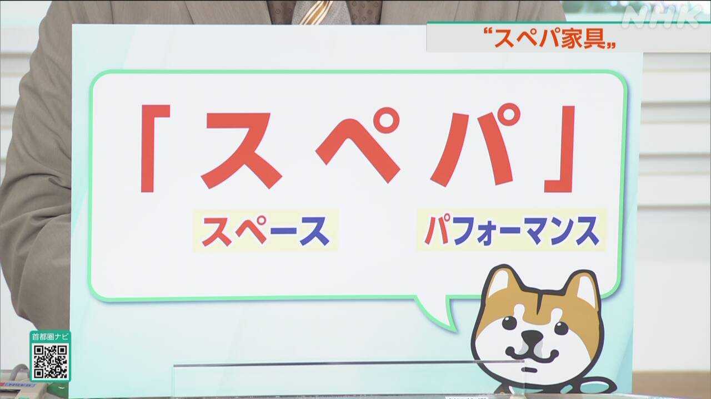
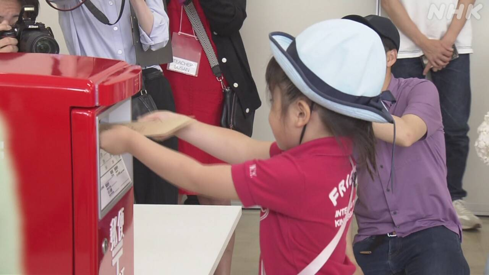

最新ニュース
1️⃣ 東京の小学校で火事 11人が病院に運ばれた
19日、東京の小学校で火事がありました。午前11時ごろ、東京の北区にある滝野川第三小学校で火事がありました。
4階にある音楽室の近くから黒い煙が出ていました。消防車など75台が小学校に行って、火を消しました。
小学校には、子どもや先生などが350人ぐらいいました。警察によると、音楽室にいた子どもなど11人が病院に運ばれました。
ほかの子どもたちは、近くの公園などに避難しました。
警察や消防が火事の原因を調べています。
2️⃣ サッカーのワールドカップ 日本は21日にチュニジアと試合
サッカー、ワールドカップのニュースです。
日本の選手たちは、18日、次の試合があるメキシコのモンテレイに着きました。
ホテルでは、子どもたちが日本のユニフォームを着て、選手たちを迎えました。メキシコに住む日本の中学生は「試合を見に行きます。日本に勝ってほしいです」と話していました。
日本の時間で21日、日本はチュニジアと試合をします。久保建英選手は前の試合で、けがをしたため、チュニジアとの試合に出ません。
3️⃣ 「スペパ家具」 スペースをうまく使う家具が人気

狭い部屋で、スペースをうまく使うことができる家具が人気になっています。
いろいろな使い方ができたり、小さくなったりして、「スぺパ家具」と呼ばれています。
スペースパフォーマンスがいいという意味です。
東京など大きいまちでは、土地やマンションの値段が高くなって、狭い家が増えているため、人気になっています。
スウェーデンから来た会社は、1つで、ソファー、シングルベッド、ダブルベッド、服などを入れる収納になる家具を売っています。一人暮らしの若い人などに、よく売れているそうです。
インターネットでも家具を売っている日本の会社では、小さくなるテーブルや棚が人気です。この会社の人は「大きいまちでは、狭い家が多いので、小さくなる家具をさがしている人が増えていると思います」と話していました。
4️⃣ 父の日 子どもたちがお父さんに手紙を出した

21日は「父の日」です。18日、岩手県盛岡市の郵便局で、子どもたちがお父さんに手紙を出しました。
英語を習っている3歳から6歳の子どもたちが、お父さんにありがとうの気持ちを伝える英語の歌を歌いました。
そして、自分たちで切手を買って、ポストに手紙を入れました。手紙には、お父さんと一緒に撮った写真が入っています。
英語のメッセージも書いてあります。手紙を出した女の子は「いつもパパとブロックで遊んでいます。うれしい気持ちで手紙を作りました」と話していました。
- 〜がある / 〜がいる
- 〜ごろ
- 〜ている / 〜でいる
- 〜から
- 〜など
- 〜くらい / 〜ぐらい
- 〜や〜など
- 〜によると
- 〜ため
- 〜ことができる
- 〜こと
- 〜になる
- 〜方
- 〜たり〜たりする
- 〜という
- 〜そうだ
- 〜ても / 〜でも
- 〜ので
- 〜と思う
vebaev.github.io
Generated: 2026-06-19 12:07:15 UTC